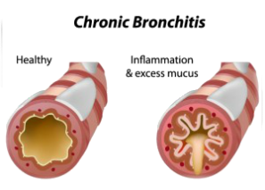

Chronic Obstructive Pulmonary Disease
Introduction
A chronic lung disease that makes it hard to breathe. Increasingly common, affecting millions of Americans, and is the third leading cause of death in the U.S. COPD is often preventable and treatable. This is a disease where patient has difficulty in emptying air out of the lungs (airflow obstruction) can lead to shortness of breath or feeling tired because you are working harder to breathe. COPD is a term that is used to include chronic bronchitis, emphysema, or a combination of both conditions. 1.6. Asthma is also a disease where it is difficult to empty the air out of the lungs, but asthma is not included in the definition of COPD. It is not uncommon, however for a patient with COPD to also have some degree of asthma.
Two Main Forms of COPD
Smoking is the main cause of COPD. The more a person smokes, the more likely that person will develop COPD. But some people smoke for years and never get COPD.
Causes of COPD
Exposure to certain gases or fumes in the work place.
Exposure to heavy amounts of secondhand smoke and pollution.
Frequent use of a cooking fire without proper ventilation.
Symptoms of Chronic Obstructive Pulmonary Disease
Pathophysiology of Congestive Heart Failure
Pathophysiology or physiopathology is a convergence of pathology with physiology. Pathology is the medical discipline that describes conditions typically observed during a disease state, whereas physiology is the biological discipline that describes processes or mechanisms operating within an organism. Pathology describes the abnormal or undesired condition, whereas pathophysiology seeks to explain the physiological processes or mechanisms whereby such condition develops and progresses.

Concept Map of Chronic Obstructive Pulmonary Disorder
Concept map of Congestive Heart Failure aides to assist as graphic organizer to help organize and represent knowledge about Chronic Obstructive Pulmonary Disorder
Comparative Features of COPD
| Feature | Chronic Bronchitis | Pulmonary Emphysema |
|---|---|---|
| Mechanic of airway obstruction | Decreased airway lumen due to mucus and inflammation | Loss of elastic recoil |
| Dyspnea | Moderate | Severe |
| FEV1 | Decreased | Decreased |
| PaO2 | Marked Decreased Blue bloater |
Modest Decreased Pink Fuffer |
| PaCO2 | Increased | Normal to decreased |
| Diffusing capacity | Normal | Decreased |
| Hematocrit | Increased | Normal |
| Cor Pulmonale | Marked | Mild |
| Prognosis | Poor | Good |
SBAR Report to Physician about a critical situation
Nursing Management
Medication Treatment
Laboratory and Examinations
Assessment questions
Do you currently smoke? Or did you smoke in the past?
How often are you short of breath?
Do you cough? How long have you been coughing?
Do you cough up sputum (phlegm, mucus)?
Does anyone or did anyone in your family have lung disease?
Warning and Triggers

Warning of signs and symptoms of COPD flare–up
- A usual increase in shortness of breath, mucus (phlegm) that is more yellow, green or brown than usual
- An increase in the amount, thickness or stickiness of your mucus (phlegm)
- Fever
- Symptoms of ca cold, such as a headache, runny nose, or sore throat
- Swollen ankles
- Feeling tired and generally unwell
- Chest pain
- Blue lips or fingers
- Confusion, can't think clearly, or very agitated (upset)
- Drowsy
Triggers of COPD
- Air pollution, smog
- Second-hand smoke
- Strong fumes, perfume, scented products
- Cold air
- Hot and humid air
Medications
2 main types of bronchodilators that come in inhalers
Beta-2 agonists
- Salbutamol (Ventolin ® or Airomir ®)
- Terbutaline (Bricanyl ®)
- Formoterol (Oxeze ® Foradil ®)
- Salmeterol (Serevent ®)
- Indacterol (Onbrez ®)
Anticholinergics
- Ipratropium bromide (Atrovent ®)
- Tiotropium (Spiriva ®)
- Glycopyrronium (Seebri ®)
- Aclidinium (Tudorza ®)
- Advair ® (fluticasone combined with salmeterol)
- Breo &tm (fluticasone furoate combined with vilanterol trifenatate)
- Symbicort ® (budesonide combined with formoterol fumarate)